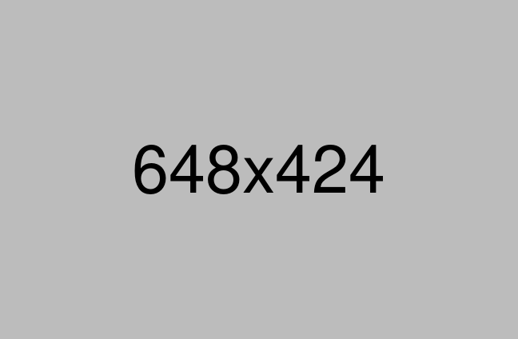
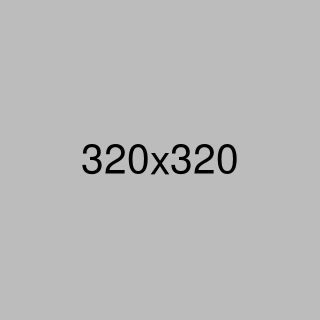

The differentiator was executing technology with an operational mindset, prioritising real business processes over tools alone.
Context
The goal was to integrate sales, marketing and operations in one digital flow to reduce commercial friction and improve traceability of the real-estate pipeline.
Challenges addressed
Centralise lead information, standardise sales follow-up and keep KPI visibility in near real time without slowing daily operations.

Results

Conclusions
Este caso demuestra como una implementacion PropTech bien estructurada mejora procesos, acelera decisiones y aporta trazabilidad comercial en proyectos residenciales.